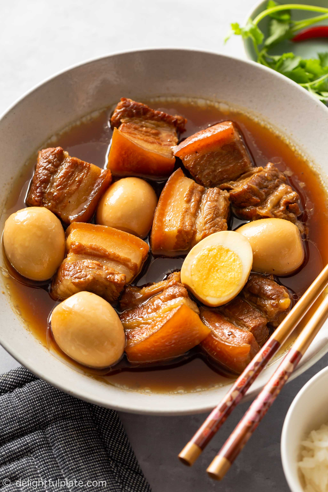

Home
Com Thit Kho Recipe

Description
What is Thit Kho? Thit Kho is an authenic vietnamese staple dish that you typically will not find at restaurants, like you would find Pho
It is a warm and comforting home cooked meal that every vietnamese kid has grown up eating
This dish is described as braised pork belly with caremalized eggs in a coconut caramel sauce, typically served over a warm bowl of rice
Ingredients - What You Will Need!
- 1 lbs pork belly or pork shoulder
- 4 large eggs
- 1 shallot
- 2 cloves garlic
- 3 tbsp fish sauce
- 1 tbsp soy sauce
- 1 tbsp brown sugar
- 1 tbsp granulated sugar
- 2 tbsp vegetable oil
- 1 cup coconut soda or coconut water
- 1 tbsp chicken boullion powder
- ground black pepper
- red chilies and green onions for garnish
Instructions!
- Prepare pork belly or shoulder. Give your pork a rinse under cold water. Then, using a sharp knife, slice pork into equal bite sized pieces with skin, fat, and meat attached, approx. 1-1/2 x 1 inch.
- In a large pot, add pork and enough water to cover the top. Bring water to a boil ~10 mins in order to remove impurities.
- Once boiling, removed pork belly from water and rinse once more until clear.
- Next, marinate pork belly in a medium bowel with fish sauce, chicken bouillon, brown sugar, ground pepper, garlic, and shallots. Let this marinate for atleast 30 mins.
- While the pork is marinating, start by boiling your eggs for 10 minutes. Once cooked, tranfer eggs into a bowl of ice water to cool. When cooled, peel your eggs.
- Once pork belly has had enough time to marinate and absorb the flavors of the seasonings, prepare your large pot again
- In your large pot, start by adding your vegetable oil and granulated sugar. Bring your flame up in order to begin the caramelizing process
Caramelize your sugar until you achieve a dark brown caramel color, be careful from getting it too dark or you may have burnt it
- Once your sugar is caramelized, add in your marinated pork with all of the ingrients and juices along with it
- Pan fry pork for about 30 seconds to release aroma from shallots and garlic
- Add your coconut soda or coconut water, and allow to simmer on medium heat for 40 mins
- After 40 mins, add your boiled eggs into the pot and continue to simmer uncovered for another 30 minutes
- OPTIONAL - Garnish with red chilies, if you like spice, ground black pepper, and green onions
- Voila! Serve this dish over a warm bowl of white or jasmie rice and enjoy!
For more, see other recipes online!